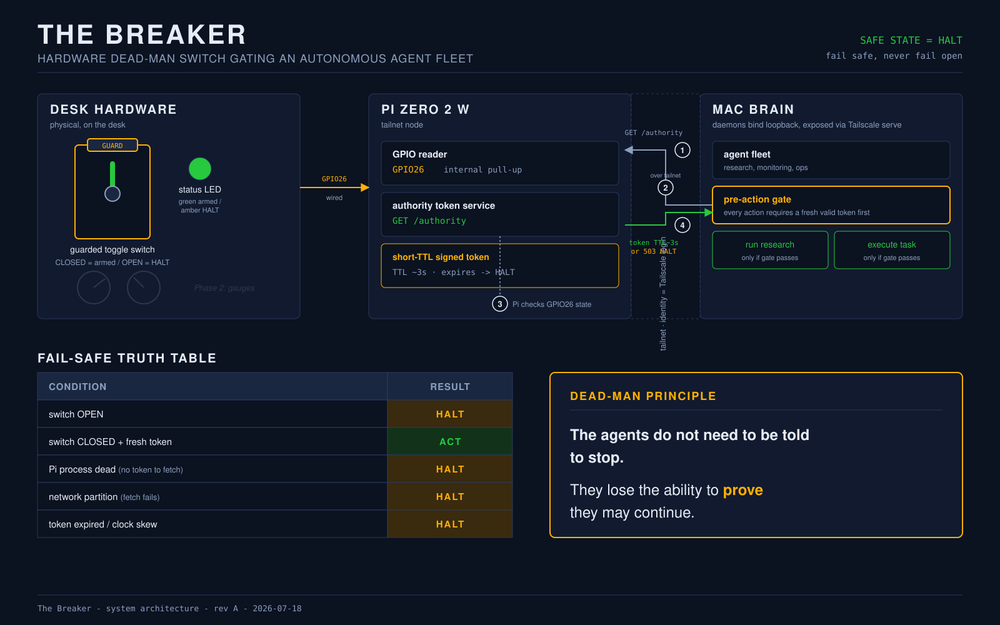
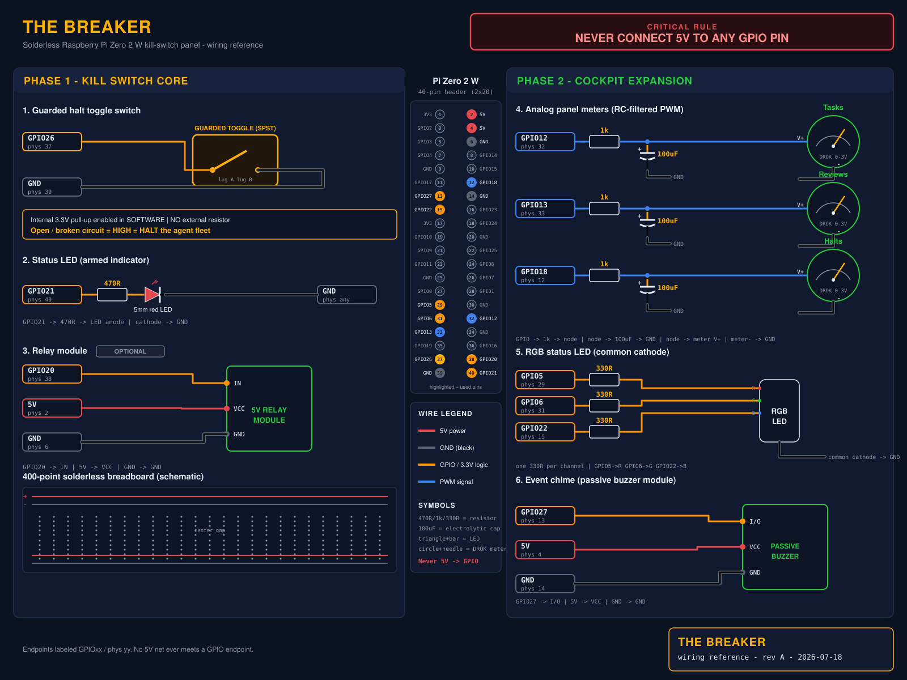
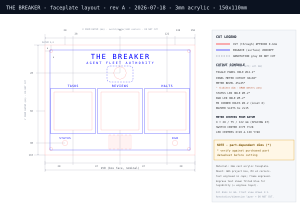

I run a small fleet of AI agents that handle research, monitoring, and busywork while I sleep. Software has an off switch only as long as the software cooperates. So I gave them one that doesn't.
The agents run unattended. If one misbehaves, there is no physical way to make it stop — the "off switch" only works while the software chooses to listen. I wanted a control I could reason about physically: something I can see, flip, and trust.
A guarded toggle feeds a Raspberry Pi Zero 2 W on my private Tailscale network. The Pi serves a short-TTL authority token over HTTP. Every agent must hold a fresh token before every action. The agents are never told to stop — they lose the ability to prove they may continue.
The safe state is reached by loss, not by a command. Anything that breaks the chain — the switch, the Pi, the network, the clock — fails safe.
| Switch OPEN | HALT |
| Pi process dead (no token to fetch) | HALT |
| Network partition (fetch fails) | HALT |
| Token expired / clock skew | HALT |
| Switch CLOSED + fresh token | ACT |
GPIO26 to ground, with the Pi's internal pull-up in software. An open or broken circuit reads HIGH = HALT. 5V never touches a GPIO pin.

Cut at the UW Bothell makerspace. Phase 2 adds three analog gauges for live agent-activity metrics (tasks, reviews, halts), an RGB status LED, and an event chime.

Phase 1 gets a working bench demo. Both phases land around $106–125, under a $200 cap. The full itemized list, hand-audited, is in hardware/bom.md.
| Raspberry Pi Zero 2 W (pre-soldered headers) | $15.00 |
| Guarded missile toggle switch | $8.00 |
| SanDisk Ultra 32GB microSD | $7.99 |
| 400-point solderless breadboard | $3.00 |
| Female-female Dupont jumpers (40-pack) | $5.00 |
| 5mm red LED + 470Ω resistor | $0.60 |
| Pre-crimped female spade connectors (×4) | $2.00 |
| Phase 1 core | $41.59 |
{kind=link}
{kind=link}
{kind=link}
{kind=link}
{kind=link}
{kind=link}
{kind=link}
{kind=link}
{kind=link}